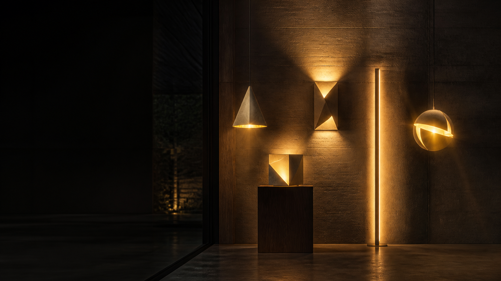

A single open-source firmware and electronics platform runs the entire JC Lighting Collection. Buy one fixture or all twelve — provisioning, scenes, OTA updates, and diagnostics work identically across the line. Local-first, cloud-optional, obsolescence-hostile — with GetBrighter-class emitters integrated in every fixture.
Every fixture meets the same electronics contract — the only design choice per fixture is which radio wins.
Single-body, always-powered fixtures: Bend, Dot, Overture, Quarter Sphere, Racetrack, Cymbal, Interlace, Sixty-Forty, Stance, Shielded. RISC-V core, native WiFi + BLE, Matter-over-WiFi, ~$1 at volume. WiFi matters more than µW standby here, so it wins by default.
Helium and Trace: many nodes on one low-voltage bus. The nRF52840 brings µA-level standby, the best BLE stack in the business, native USB-C without an external UART, and a Matter-over-Thread path — the right trade when a fixture is a network of lights, not one light.
Every mains fixture runs a universal-input constant-current driver with power-factor >0.9 and PWM dimming above 25 kHz — flicker-free at any dim level, camera-safe, no 120 Hz beat. Multi-body fixtures step down to a 48V DC bus with per-segment fusing.
Matter for Apple Home, Google Home, and Alexa. Native Home Assistant discovery over MQTT/mDNS for local control with zero cloud. BLE app for setup, OTA, and factory diagnostics. ESP-Touch/SoftAP provisioning fallback for routers that hate everything.
The light engine is shared verbatim across all twelve profiles; fixtures differ only in channel count and optical profile.
GetBrighter-class emitters, integrated. Seoul SunLike / Bridgelux Thrive / Cree-class on every fixture — the flagship-bulb tier (CRI 97–99, R9 > 90) baked into the fixture itself, no premium bulb swap required. TM-30 RF ≥ 90: skin tones, wood, and food look right — the spec the original collection rarely publishes because it rarely clears 90.
Perceptually spaced CCT mixing with duv correction on the black-body locus. Circadian schedules in the firmware, not the hub. RGBW channel option on scene fixtures (Dot, Overture, Helium, Sixty-Forty) for saturated looks — honestly speced: the RGBW engine mixes to ~CRI 92 / R9 ≈ 70, so every RGBW fixture also ships a high-CRI tunable-white variant that holds CRI 97 / R9 > 90.
>25 kHz carrier, 16-bit duty resolution, and a gamma LUT, and a true 0–100% dimming range with <1% flicker at every level. No pop-on, no drop-out, no phone-camera bands.
LED boards are rated 50k hours at realistic case temps, and the firmware derates — not fails — if a fixture is boxed in. Every thermal event is logged to flash for the next owner.
Opal PMMA/silicone diffusers specified to a unified-glare rating under 19 in the worst case — the difference between "nice fixture" and "I can live under it."
Every emitter lives on a field-replaceable board — pogo-pin carriers, magnetic pucks, or collet-mounted sticks. LED tech improves; your fixture doesn't get discarded when it does.
Firmware-gated multi-emitter overdrive. Where the form factor supports it — Racetrack 48" (20,600 lm), Trace dual-rail (20,400 lm), Helium Gallery config (20,800 lm) — Boost drives parallel emitter arrays with a thermally-budgeted step-down curve, only on fixtures with Boost PSU or 48 V bus headroom. Where physics wins (a 3.7" sconce), the card states the honest max instead of a marketing number.
A fixture profile is a device-tree blob + calibration blob, compiled into the same firmware image. Flash any fixture with any profile; the hardware id-matches at boot.
| Profile | Fixture | SoC | Channels | Max output | Extras |
|---|---|---|---|---|---|
| bend-s / -m / -l | JC Bend 8/12/20" | ESP32-C3 | TW ×1 | 450–1,400 lm · Boost 2,150 | Ambient-light auto-dim (opt. sensor) |
| dot-13 / -16 / -22 / swing | JC Dot family | ESP32-C3 | TW ×1 (+RGBW 16/22) | 1,200–2,600 lm · Boost 5,400 | Swing lamp: touch dim + presence hold |
| overture-s / -m / -xl / lin / sconce | JC Overture family | ESP32-C3 | TW ×6–12 (RGBW opt.) | 950–2,500 lm · Boost 7,400 | Per-stick diagnostics, up/downlight scenes |
| qsphere | JC Quarter Sphere | ESP32-C3 | TW ×1 | 600 lm · Boost 1,450 | Wall-wash curve, dusk-to-dawn schedule |
| racetrack-28 / -38 / -48 | JC Racetrack | ESP32-C3 | TW ×1 | 1,800–4,200 lm · Boost 20,600 | Flicker-free video mode (extended 16-bit) |
| helium-4 … -12 | JC Helium | nRF52840 | TW per globe (RGBW opt.) | 700–5,200 lm · Boost 9,800 / 20,800 (Gallery) | Per-globe addressing, drift-free cluster scenes |
| cymbal | JC Cymbal | ESP32-C3 | TW ×1 | 2,200 lm · Boost 4,700 | Pendant/sconce auto-detect via jumper |
| interlace | JC Interlace | ESP32-C3 | TW ×3 | 900 lm · Boost 1,950 | Per-ring chases, wave scenes |
| sixtyforty | JC Sixty-Forty | ESP32-C3 | TW ×2 (+RGBW opt.) | 1,600 lm · Boost 3,450 | Bowl/cap independent or mirrored |
| stance | JC Stance | ESP32-C3 | TW ×2 | 1,100 lm · Boost 2,350 | Twin-column level check at boot |
| trace-rail | JC Trace | nRF52840 | TW per rod | 3,600 lm · Boost 5,150 / 20,400 (dual-rail) | Segment mesh, add-rail discovery, per-rod presence |
| shielded | JC Shielded | ESP32-C3 | TW ×1 | 500 lm · Boost 1,150 | Wet-location heater watch, nightlight floor |
Serial console, logs, firmware, and factory test over one standard cable. No vendor dongle, no JTAG hunt, no "contact support."
ESP Web Tools / WebUSB flow: plug in, click, flash — even a totally wiped board recovers in a browser tab. Signed OTA for everything else.
LED board, driver board, SoC module, diffuser, and glass are all individually replaceable SKUs with published drawings. Nothing important is potted, welded, or glued.
Firmware Apache-2.0. Hardware CERN-OHL-H. Documentation CC-BY-SA-4.0. Third-party repair and clone-friendly by explicit license — if we vanish, the lights don't.